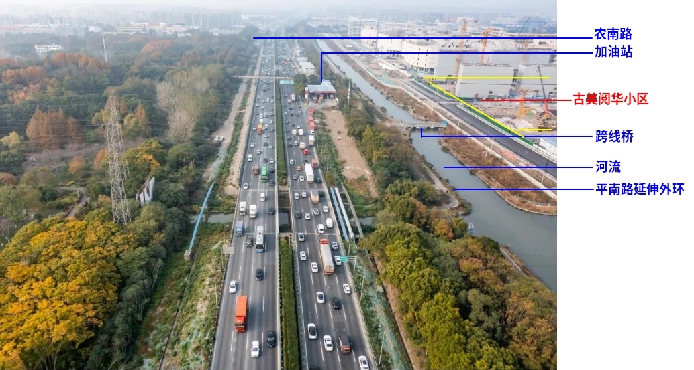
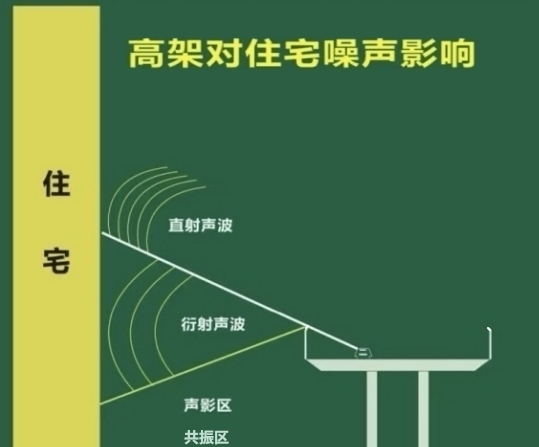

您好！我们是星中路123弄，77弄古美阅华小区居民，现就古美阅华小区西侧外环西段（农南路-平南路） 噪声污染问题向贵部门反映，恳请政府协调相关部门采取有效措施——安装全封闭式隔音罩，改善居民身心环境。
外环作为重要的交通干道，对经济发展发挥了重大作用，但其噪声也给附近居民带来了不少烦恼。经初步监测，本小区住宅楼昼间首层外窗1米处噪声峰值达67分⻉，五层外窗1米处噪声峰值达72分⻉（具体以政府委托专业资质单位监测结果为准），远超《声环境质量标准》（GB3096-2008）中2类功能区昼间60分⻉、夜间50分⻉的限值。目前，闵行区外环西段（农南路-平南路）抬升工程已动工，预计竣工后噪声及粉尘污染问题更加严重。
该路段噪声严重的5点客观事实（附该路段航拍图）：
1，距离困境：小区西侧距外环仅约120米，相当于标准足球场长度
2，车流压力：17.1万 pcu/12h的震动与噪声，相当于平均每分钟有238辆车通过
3，噪声共振：不同于中环与内环，外环重型卡车、渣土车、半挂车、搅拌车、油罐车、厢式货车、冷链运输车、双层汽车运输车等大车常年累月昼夜不断，胎噪与振动，灰尘与声浪
4，防护缺失：小区西侧因加油站、跨线桥、平南路延伸外环、河流等4项物理存在导致约200米绿化断带，空间空旷，形成良好的噪声污染扩散通道
5，路面抬升：该路段外环主线抬升后，噪声阻隔物（如绿化带）高度不足

该路段存在两个2类敏感声环境保护目标：
1，古美阅华小区，距离外环约120米
2，古美阅华小区南侧25-05地块规划的学校，距离外环约120米
据闵行区有关部门反映，目前该路段
采取主线2道6m折板型声屏障+匝道1道6m折板式声屏障+地面辅道中分带6m生态墙
仅设置简易折板隔音屏，但其高度不足、覆盖面有限，难以阻挡噪声向高处（小区为14-17F高层，建筑高度约50米）扩散，无法有效吸收低频与振动噪声，见下图。

经实地观察，同类问题在其他路段（如与沪金高速抬升段相同的全封闭式隔音屏障）通过安装全封闭式隔音罩后得到显著改善，故建议借鉴成功经验。
2025年3月31号发布的国家标准《住宅项目规范》于2025年5月1号实施，对噪声扰民问题，对噪声限值，隔声限值做出了要求。
2010年1月11日实施的《地面交通噪声污染防治技术政策》（环发【2010】7号）明确提出，道路或轨道两侧为高层噪声敏感建筑物时，条件许可，可进行线路全封闭处理。
1，实地再次环评：
小区交付时间早于外环抬升工程完工时间，恳请贵部门联合环境监测、交通规划等专业机构，对闵行区外环西段（农南路-平南路）噪声进行系统测量并公示数据，确认污染等级。2，安装全封闭式隔音罩：覆盖高架邻近小区路段（声屏障的外延长度在规范下限的基础上进一步提升，建议不小于受保护对象到声屏障距离的 4 倍），从源头降低噪声传播。
研究表明，噪声污染会对居民（尤其是老人、儿童及居家办公人群）的身心健康造成严重影响，具体表现但不限于以下3点：
1，夜间难以入睡，睡眠质量差
2，居家学习、办公效率低下
3，神经衰弱、耳鸣等症状
高架粉尘和尾气污染对居民的危害也是多方面的，具体包括但不限于以下4点：
1，呼吸系统疾病：粉尘颗粒和尾气中的有害物质（如二氧化氮、悬浮颗粒物等）可以刺激呼吸道，导致气管炎、哮喘等疾病，尤其是对儿童影响更为明显
2，心血管疾病：空气污染物会通过血液循环进入体内，增加血管硬化风险，并引发心脏病、高血压等问题
3，癌症风险增加：尾气中含有的苯、甲醛等化学物质可能是致癌物质，长期暴露可能增加罹患癌症的风险
4，免疫系统影响：空气中的重金属和有毒颗粒会影响人体免疫系统的功能
因此，本建议获得古美阅华小区数百户居民联名支持（附签名表）。我们充分理解政府工作的复杂性，但噪声污染已严重影响民生福祉， 恳请贵部门高度重视，切实考虑居民实际需求，贯彻 党中央“好房子” 的政策，采取科学合理的解决方案，确保居民生活环境与身体健康不受噪音与粉尘影响。
最后，感谢贵部门执政为民，期待尽快收到回复。
此致
敬礼！
联系电话：
古美阅华小区全体居民
2025年04月13日
签字表-1：
签字表-2：
签字表-3：
签字表-4：
签字表-5：
签字表-6：
签字表-7：
签字表-8：
签字表-9：
签字表-10：
签字表-11：
签字表-12：
签字表-13：
签字表-14：
签字表-15：
签字表-16：
签字表-17：
签字表-18：
签字表-19：
签字表-20：